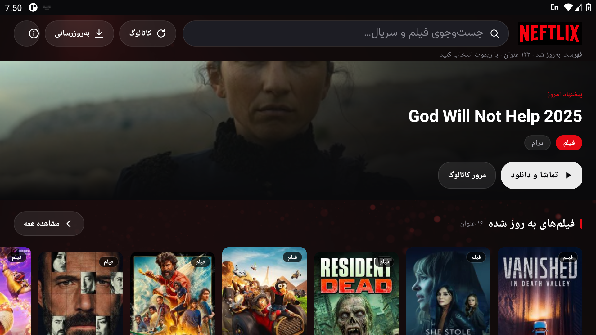
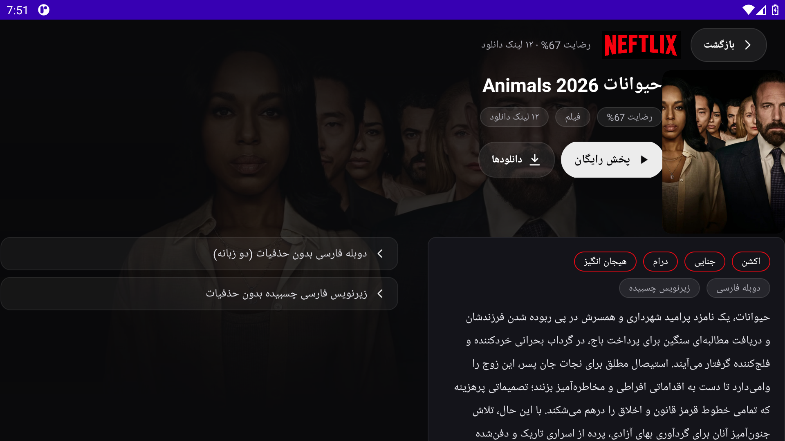

تصویرها اسکرینشات واقعی برنامه روی امولاتور ۱۰۸۰p تلویزیون هستند (چگالی ۳۲۰ و ۱۶۰).
با ریموت: جهتها برای جابهجایی، OK برای باز کردن/بازکردن گروه/پخش، Back برای بازگشت.
صفحهٔ اصلی

بیلبورد «پیشنهاد امروز» با هنر افقی صفحهٔ عنوان، ریلهای هر بخش (پیشنمایش ۲۰ عنوانی + «مشاهده همه»)،
برچسب نوع روی پوستر، عنوان و ژانر زیر کارتها، و در پایین صفحه ریل ژانرها.
صفحهٔ جزئیات

هدر با هنر افقی، پوستر، عنوان و قرصهای IMDb/رضایت/نوع/تعداد لینک؛ دو ستون
(توضیحات و ژانرها راست، فهرست پخش چپ)؛ گروهها پیشفرض بستهاند و با OK باز میشوند.
نکتههای طراحی
یک فضای طراحی ۹۶۰dp: همهٔ اندازهها از Ui.java میآیند و با
scale = عرضصفحه ÷ ۹۶۰ به دستگاه نگاشت میشوند؛ نتیجه اینکه ۷۲۰p، ۱۰۸۰p و ۴K
ظاهر یکسان دارند (حتی دستگاهی که چگالی ۱ گزارش میکند).
فوکوس واضح برای ریموت: کارتها با قاب قرمز ۳dp و کمی بزرگنمایی، دکمهها
با تغییر رنگ قرمز/سفید و بولد شدن متن.
ریلهای هوشمند: کارتِ فوکوسشده خودکار به وسط دید میآید و نسخهٔ
بزرگتر تصویر بارگذاری میشود؛ ترتیب کارتها در RTL از راست به چپ است.
سلسلهمراتب پخش: فصل → دسته (دوبله/زیرنویس) → کیفیت → شبکهٔ قسمتها
(سه ستون)؛ تا وقتی باز نشده هیچچیز اندازهگیری نمیشود.